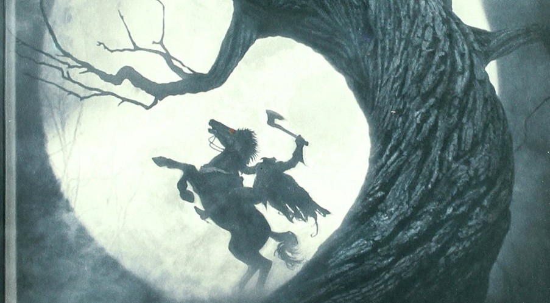
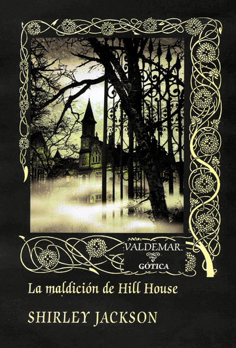
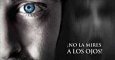
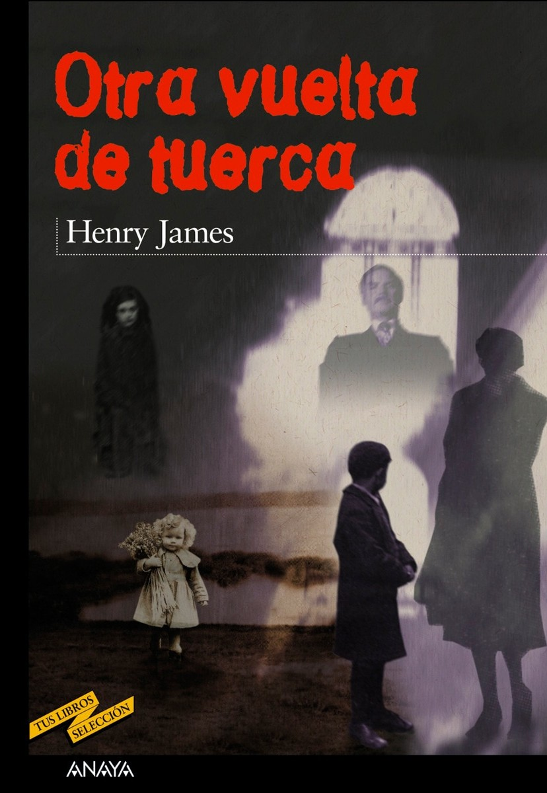

PARANORMAL
El terror paranormal se basa en entidades invisibles, presencias y fuerzas sobrenaturales. Es uno de los subgéneros más inquietantes porque rompe las reglas de la realidad.
Cine: The Conjuring
Investigaciones paranormales basadas en casos reales de los Warren.
Cine: Insidious
Viajes astrales, demonios y entidades que habitan “El Más Allá”.
Cine: El Exorcista
Una de las posesiones demoníacas más icónicas del cine.
Cine: Poltergeist
Espíritus atrapados en una casa familiar.

Libro: La leyenda de Sleepy Hollow
Un jinete sin cabeza que aterroriza un pequeño pueblo, mezcla de mito y aparición sobrenatural.

Libro: Hill House
Una de las casas embrujadas más famosas de la literatura.

Libro: La mujer de negro
Un joven abogado descubre una presencia fantasmal en una mansión aislada, desencadenando una serie de sucesos aterradores.

Libro: Otra vuelta de tuerca
Ambigüedad entre locura y fantasmas.